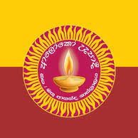

School Education

Kalutara Gnanodaya Maha Vidyalaya- 
Ananda Sastralaya National School
My formal education began at Kalutara Gnanodaya Maha Vidyalaya, where I completed my primary schooling from Grade 1 to Grade 5 (2009–2013). My strong academic aptitude was demonstrated by successfully passing the highly competitive Grade 5 Scholarship Examination with 166 marks, which secured my transition to one of the region's leading schools. From 2014 to 2022, I attended Ananda Sastralaya National School, Mathugama, where I progressed from Grade 6 through to the Advanced Level. My commitment to excellence was evident in the G.C.E. O/L Examination in 2019, where I achieved commendable results with 2 'A' passes, 6 'B' passes, and 1 'C' pass. I subsequently elected to pursue the demanding Physical Science stream for my A/L studies, a decision that successfully culminated in my selection to the University of Sri Jayewardenepura for my Bachelor of Science degree. Beyond academics, my time at Ananda Sastralaya was deeply enriched by my involvement in sports; I was a dedicated member of the school Cricket Team from 2014 to 2022, proudly representing the school in two major annual Big Matches. This culminated in a significant leadership role in 2022, where I was appointed the Captain of the Under 19 Cricket Team, an experience that honed my skills in team management, strategic thinking, and leadership under pressure.